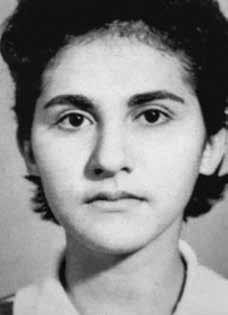

Anatália
de Souza
Melo
Alves
CIRCUNSTÂNCIAS DA MORTE
Anatália de Souza Melo Alves morreu no dia 22 de janeiro de 1973, após supostamente ter se suicidado, em circunstâncias ainda não esclarecidas. Ela foi presa no dia 17 de dezembro de 1972 por agentes do Destacamento de Operações de Informações – Centro de Operações de Defesa Interna (DOI-CODI), do IV Exército em Recife, e levada para um local desconhecido. No mesmo dia, horas antes, foram presos Luiz Alves Neto, seu marido, e José Adeíldo Ramos, ambos filiados ao PCBR.
Junto a Anatália, também foram presos os militantes Edimilson Vitorino de Lima e Severino Quirino Miranda. De acordo com o cadastro de recebimento de presos, da Delegacia de Segurança Social de Pernambuco, é possível notar que a prisão de Anatália só foi registrada 26 dias após o seu sequestro, quando foi encaminhada do DOI-CODI à mencionada delegacia, ligada ao Departamento de Ordem Política e Social (DOPS) de Recife, no dia 13 de janeiro de 1973. Apesar desse registro, o auto de exibição e apreensão é do dia 14 de janeiro de 1973, posterior ao seu trânsito entre cárceres.
Segundo versão apresentada pelos órgãos de segurança, como se vê no Ofício nº 20 produzido pela Delegacia de Segurança Social, Anatália teria se enforcado com a tira de sua bolsa enquanto tomava banho nas dependências da própria delegacia, ocasião em que estava sob a vigilância do agente policial Artur Falcão Dizeu. Segundo relatou o agente, passados 20 minutos dentro do banheiro, o policial teria estranhado a demora e, após bater várias vezes, teria arrombado a porta, deparando-se, em seguida, com ela morta com a alça da bolsa envolvendo o seu pescoço. Segundo Artur Falcão, ele teria pedido ajuda a Genival Ferreira da Silva e Amilton Alexandrino dos Santos.
Segundo o laudo do Instituto de Polícia Técnica (IPT) de Pernambuco, Anatália foi encontrada deitada numa cama de campanha, o que contraria a versão de que teria morrido no banheiro. De acordo com a análise pericial, sua morte teria sido causada por asfixia por enforcamento. Um fato obscuro, entretanto, chama a atenção para a violência presente no caso. A análise das fotos do laudo de perícia de local de ocorrência indica que seus órgãos genitais foram queimados. O laudo já citado, produzido pelo IPT, também reforça a evidência, esclarecendo que duas peças do vestuário usado pela vítima (um vestido vermelho de algodão, estampado, e uma calça jersey rosa) estavam parcialmente queimadas. Esse fato corrobora as declarações de algumas testemunhas, que afirmaram que Anatália teria sido submetida a diversos tipos de tortura, incluída violência sexual.
As marcas de queimaduras se iniciavam na região pélvica, o que aponta para uma tentativa de eliminar os indícios de violência sexual. Ao mesmo tempo, um dos elementos que apontam para a inconsistência da versão apresentada pelos órgãos de repressão é o fato de uma presa incomunicável estar portando uma bolsa. Outro elemento que relativiza a versão de suicídio é o tamanho da alça da bolsa. Segundo declaração de comissionado da Comissão Estadual da Memória e Verdade Dom Helder Câmara (CEMVDHC), Manoel Moraes, em audiência pública realizada pela Comissão Rubens Paiva sobre os casos de Eduardo Collier e Fernando Santa Cruz, realizada em 20 de fevereiro de 2013, o comprimento da alça impediria sua utilização para os fins alegados.
A CEMDP não descartou a possibilidade de se tratar de um caso de suicídio. Contudo, devido às incongruências do caso, a CEMVDHC dedicou esforços para averiguar as circunstâncias de sua morte e está em fase de finalização de um laudo pericial, que está sendo realizado pelo Instituto de Criminalística de Pernambuco. Anatália foi sepultada sem que a família tomasse conhecimento e sem que lhes fosse entregue a certidão de óbito. Entretanto, após investigações realizadas pela CEMVDHC, de Pernambuco, conseguiu-se localizar seu atestado de óbito, assim como informação sobre local de sepultamento no Cemitério de Santo Amaro em Recife (PE).
Seu corpo já tinha sido exumado e uma urna lacrada, supostamente contendo os restos mortais de Anatália, foi entregue aos seus familiares em 1975, com a recomendação de que não a abrissem em nenhuma circunstância. Sendo assim, os restos mortais carecem, ainda, de plena identificação.
Anatália de Souza Melo Alves died on January 22, 1973, after allegedly committing suicide, in circumstances that have not yet been clarified. She was arrested on December 17, 1972 by agents from the Information Operations Detachment – Internal Defense Operations Center (DOI-CODI), of the IV Army in Recife, and taken to an unknown location. On the same day, hours before, Luiz Alves Neto, her husband, and José Adeíldo Ramos, both affiliated with the PCBR, were arrested.
Along with Anatália, the militants Edimilson Vitorino de Lima and Severino Quirino Miranda were also arrested. According to the prisoner reception register, from the Pernambuco Social Security Police Station, it is possible to note that Anatália's arrest was only registered 26 days after her kidnapping, when she was sent from DOI-CODI to the aforementioned police station, linked to the Department of Political and Social Order (DOPS) of Recife, on January 13, 1973. Despite this record, the exhibition and seizure report is from January 14, 1973, later to their transit between prisons.
According to the version presented by the security agencies, as seen in Official Letter No. 20 produced by the Social Security Department, Anatália had hanged herself with the strap from her bag while taking a shower on the premises of the police station itself, at which time she was under the surveillance of police agent Artur Falcão Dizeu. According to the agent, after 20 minutes inside the bathroom, the police officer was surprised by the delay and, after knocking several times, broke down the door, finding her dead with the bag strap around her neck. According to Artur Falcão, he would have asked Genival Ferreira da Silva and Amilton Alexandrino dos Santos for help.
According to the report from the Technical Police Institute (IPT) of Pernambuco, Anatália was found lying on a camp bed, which contradicts the version that she died in the bathroom. According to expert analysis, his death would have been caused by asphyxia due to hanging. An obscure fact, however, draws attention to the violence present in the case. Analysis of the photos in the forensic report from the scene of the incident indicates that his genitals were burned. The aforementioned report, produced by the IPT, also reinforces the evidence, clarifying that two pieces of clothing worn by the victim (a red printed cotton dress and pink jersey pants) were partially burned. This fact corroborates the statements of some witnesses, who stated that Anatália had been subjected to various types of torture, including sexual violence.
The burn marks began in the pelvic region, which points to an attempt to eliminate signs of sexual violence. At the same time, one of the elements that point to the inconsistency of the version presented by the law enforcement agencies is the fact that an incommunicado prisoner was carrying a bag. Another element that relativizes the suicide version is the size of the bag strap. According to a statement by the commissioner of the State Commission for Memory and Truth Dom Helder Câmara (CEMVDHC), Manoel Moraes, in a public hearing held by the Rubens Paiva Commission on the cases of Eduardo Collier and Fernando Santa Cruz, held on February 20, 2013, the length of the strap would prevent its use for the alleged purposes.
CEMDP did not rule out the possibility that it was a case of suicide. However, due to the inconsistencies in the case, CEMVDHC dedicated efforts to investigate the circumstances of his death and is in the process of finalizing an expert report, which is being carried out by the Pernambuco Criminalistics Institute. Anatália was buried without her family knowing and without her death certificate being given to them. However, after investigations carried out by CEMVDHC, in Pernambuco, it was possible to locate his death certificate, as well as information about his burial place in the Santo Amaro Cemetery in Recife (PE).
Her body had already been exhumed and a sealed urn, supposedly containing Anatália's remains, was handed over to her family in 1975, with the recommendation that they not open it under any circumstances. Therefore, the remains still require full identification.
Anatália de Souza Melo Alves murió el 22 de enero de 1973, presuntamente suicidándose, en circunstancias que aún no han sido esclarecidas. Fue detenida el 17 de diciembre de 1972 por agentes del Destacamento de Operaciones de Información – Centro de Operaciones de Defensa Interna (DOI-CODI), del IV Ejército, en Recife, y trasladada a lugar desconocido. El mismo día, horas antes, fueron detenidos Luiz Alves Neto, su esposo y José Adeíldo Ramos, ambos afiliados al PCBR.
Junto a Anatália también fueron detenidos los militantes Edimilson Vitorino de Lima y Severino Quirino Miranda. Según el registro de recepción de reclusos, de la Comisaría de Seguridad Social de Pernambuco, se puede constatar que la detención de Anatália sólo se registró 26 días después de su secuestro, cuando fue enviada del DOI-CODI a la mencionada comisaría, vinculada al Departamento de Orden Político y Social (DOPS) de Recife, el 13 de enero de 1973. A pesar de este registro, el informe de exhibición y decomiso es del 14 de enero de 1973, posterior a su tránsito entre prisiones.
Según la versión presentada por los organismos de seguridad, según consta en el Oficio No. 20 elaborado por la Secretaría de Seguridad Social, Anatália se habría ahorcado con la correa de su bolso mientras se duchaba en las instalaciones de la propia comisaría, momento en el que se encontraba bajo vigilancia del agente Artur Falcão Dizeu. Según el agente, tras 20 minutos dentro del baño, el policía se vio sorprendido por la demora y, tras llamar varias veces, derribó la puerta, encontrándola muerta con la correa del bolso al cuello. Según Artur Falcão, habría pedido ayuda a Genival Ferreira da Silva y Amilton Alexandrino dos Santos.
Según el informe del Instituto Técnico de Policía (IPT) de Pernambuco, Anatália fue encontrada tendida en una cama plegable, lo que contradice la versión de que murió en el baño. Según peritajes, su muerte habría sido provocada por asfixia por ahorcamiento. Un hecho oscuro, sin embargo, llama la atención sobre la violencia presente en el caso. El análisis de las fotografías del informe forense del lugar del incidente indica que sus genitales fueron quemados. El citado informe, elaborado por el IPT, también refuerza las evidencias, aclarando que dos prendas de vestir que vestía la víctima (un vestido rojo de algodón estampado y un pantalón de punto rosa) fueron parcialmente quemadas. Este hecho corrobora las declaraciones de algunos testigos, que afirmaron que Anatália había sido sometida a diversos tipos de tortura, incluida violencia sexual.
Las quemaduras comenzaron en la región pélvica, lo que apunta a un intento de eliminar signos de violencia sexual. Al mismo tiempo, uno de los elementos que apunta a la inconsistencia de la versión presentada por las fuerzas del orden es el hecho de que un detenido incomunicado portaba una bolsa. Otro elemento que relativiza la versión suicida es el tamaño de la correa del bolso. Según declaración del comisario de la Comisión Estatal para la Memoria y la Verdad Dom Helder Câmara (CEMVDHC), Manoel Moraes, en audiencia pública celebrada por la Comisión Rubens Paiva sobre los casos Eduardo Collier y Fernando Santa Cruz, celebrada el 20 de febrero de 2013, la longitud de la correa impediría su utilización para los fines pretendidos.
El CEMDP no descartó la posibilidad de que se tratara de un caso de suicidio. Sin embargo, debido a las inconsistencias del caso, el CEMVDHC dedicó esfuerzos a investigar las circunstancias de su muerte y está en proceso de finalizar un peritaje, que está siendo realizado por el Instituto de Criminalística de Pernambuco. Anatália fue enterrada sin que su familia lo supiera y sin que se les entregara su certificado de defunción. Sin embargo, después de investigaciones realizadas por el CEMVDHC, en Pernambuco, fue posible localizar su certificado de defunción, así como información sobre su lugar de sepultura en el Cementerio de Santo Amaro, en Recife (PE).
Su cuerpo ya había sido exhumado y una urna sellada, supuestamente conteniendo los restos de Anatália, fue entregada a su familia en 1975, con la recomendación de que no la abrieran bajo ningún concepto. Por lo tanto, los restos aún requieren una identificación completa.